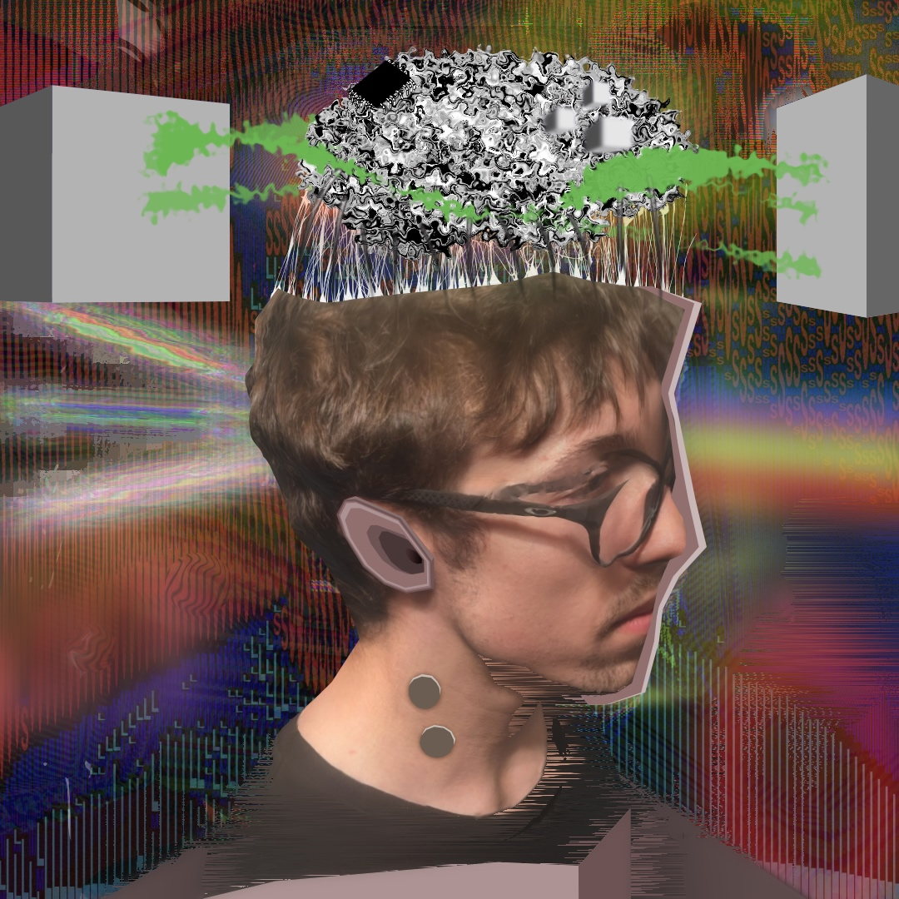

1080 x 1080

This 1080 x 1080 digital collage was created and conceptualized entirely with open-source software (GIMP and Inkscape). The piece is based on transhumanism, exploring the idea of myself being combined with technology and visualizing what I think would happen if I were to merge with it. Technology is a big part of my life. I avidly enjoy being on the internet, playing games, and exploring all sorts of media through it. Using technology is often how I see myself, but its also how the technology sees me.
I created the piece by scanning my face with Polygon, since using a scan of my face adds to the identity of the piece, and then brought it into Inkscape to add elements. I used ASCII generators and filters from tools.dia.tv to shape the background, and finished it in GIMP with effects and color changes. I chose free, open-source alternatives over Adobe throughout.